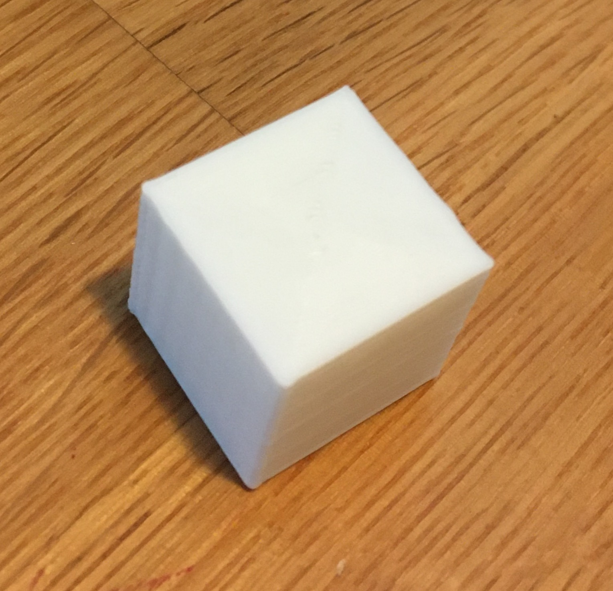

My first print!
This week was an adeventure to say the least! I have been looking forward to learning how to 3D print for a few months now. When I learned I would be purchasing my own machine I was surprised at how relatively cheap the machine was. When it arrived, I was very intimidated t put it together. My partner surprisingly was really excited and wanted to help. The first half of the assembly went pretty smoothly (considering that the directions are only images with no word accompiament? When we started to assemble the Z bar that's when things took a confusing turn. I couldn't figure out how to square up the attachments and was becoming defeated. Then, I decided to look online to see if anyone had a helpful video for assembly. Thankfully, I found this video by Just Vlad which was super helpful. We followed his instructions until the end and had an easy time assembling the rest of the machine.


Leveling the bed was far more difficult. I downloaded the bed leveling files, but didn't understand the directions correctly. This led to some damages. I misunderstood the instructions and thought I had that level correctly, I moved onto the printing, and as you can guess, this is where disaster struck. I have two punctures and a faint line where the print started. Once I heard that awful sound I immediately raced over to my machine and flipped the off switch. I had to go back and review the
low quality br>L: 2.01cm x W: 2.01cm x H: 2.00cm T: 23 mins standard quality
L: 1.97cm x W: 2.01cm x H: 2.01cm T: 27 mins
 superior quality
superior qualityL: 1.9cm x W: 2cm x H: 2cm T: 50 mins concentric with standard quality
L: 1.99cm x W: 2.00cm x H: 2.00cm T: 29 mins
Once I finally got my printbed leveled I started with the cubes. I was able to print a low, standard and super quality cube with no problem. After that I decided to make the concentric cube with the standard quality. I printed with both brims in skirts in this round but didn't notice any difference because non of these prints were having adherence issues.
.1 tolerance
D: 2.99cm x H: 3.01cm T: 53 mins
.001 tolerance
D: 2.99cm x H: 2.99cm T: 52 mins
spiralized
D: 3.00cm x H: 3.01cm T: 30 mins

supported
L: 2.98cm x H: 2.98cm T: 1 hr 3 mins
Next, I worked on the cylinders. These turned out pretty well. When I first started printing I kept getting a weird bumpy print around the seam and I didnt' understand why. After some Googling I learned that I should increase the tolerance of my max resolution and max travel resolution and that helped! It was great to see and understand the printing difference that happens between a .1 tolerance and a .001 tolerance. I think this will come in handy in the future! Additionally, when I first started printing the cylinders they wouldn't adhere to the bed in the top right corner. I ran a level bed print and it was successful, so I decided to adjust the back right corner anyway and that solved the issue!

It took about 4 prints to get the cube with the extruded cylinder. My first and second attempts did not adhere to the printbed. For the third print I thought maybe this was a trick questions
and I printed it on its side and added a support in the middle. That was a successful print, but when I tried to extrude the support from the middle I broke the cube. See below in fails section for images.
I tried to print the 4th version after I adjusted the corner of the bed as above, and that worked! I used the low quality setting with a skirt.
T:29 mins

Next, I imported the .dxf file into Rhino. I exploded the shape so I could see the vector points, and make sure my objects were closed.

Once I had my outerwall, I used the extrude function to create the height (.5") and make solid shapes. I then exported the files as .stl.
In the coming weeks I would like to learn how to add a handle to my cookie cutters to make a more accessible version for people who have dexterity or mobility issues.
A special thanks to Junchao who helped me through this process!
Below are the links to the rhino files, .stl files, .dxf files, and .jpeg images.